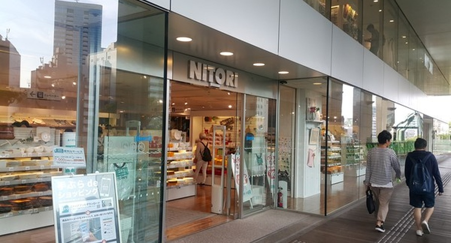

출처 : 물류신문, 손정우 기자 2026. 7. 13
도시, 더 이상 생활 소비 등 중심에 공간 아니야
(출처: 물류신문)
도시는 오랫동안 중립적인 공간으로 자리해 왔다. 사람들이 생활하고, 소비하고, 이동하는 생활 기반으로 이름 지어진 것이 도시이기 때문이다. 이런 도시는 주거, 상업, 업무, 교통이 기능적으로 나뉘고, 각 기능은 일정한 합의와 균형 속에서 작동했다. 여기서 물류 서비스는 도시 구조 바깥에서 들어와 내부를 채우는 등 보조, 혹은 지원 역할에 가까웠다.
특히 도시에서 소용되는 상품은 외곽에서 생산되거나 모인 뒤, 일정한 경로를 따라 도심으로 유입됐다. 도시는 그것을 소비하고 순환시키는 공간이었고, 물류는 이 흐름을 유지하는 보조 기능으로 작동했다. 지금까지 물류가 도시 구조를 바꾼다는 인식은 거의 존재하지 않았다. 그러나 이렇게 균형을 이뤄왔던 프로세스가 언제부턴가 무너지고 있다. 전자상거래와 플랫폼 경제가 확산되면서 도시는 더 이상 단순 소비 공간이 아닌 공간 상황으로 변화되고 있다. 상품이 ‘들어오는 공간’이 아니라, 지속적으로 순환하고 재배치되는 공간으로 변하고 있어서다. 물류가 패권이 되는 계기가 된 것이다. 무엇이 전통적인 중립적 도시 개념을 전환시킨 걸까?
‘물류 속도 경쟁’이 도시를 바꾸고, 패권 경쟁 도구로
이런 변화의 핵심은 하나다. 도시는 이제 물류가 작동하는 무대가 아니라, 물류가 설계되는 대상이 되고 있다는 점이다. 속도를 요구한 것은 소비자들이었다. 이 변화는 기술이 아니라 소비자의 요구에서 시작된 셈이다.
이제 일상을 시작하는 전자상거래의 확산은 단순히 구매 방식만 바꾼 것이 아니다. 소비자가 기대하는 ‘시간의 기준’을 완전히 바꿔놨다. 특히 한국에서는 더하다. 과거에는 주문 후 며칠을 기다리는 것이 일반적이었고, 당연했다. 하지만 지금은 ‘하루 배송’은 모든 물류기업이 하는 기본이 됐고, 새벽 배송과 당일 배송은 유통과 물류기업들의 순위를 뒤바꾸는 경쟁력으로 꼽는다. 일부 시장에서는 몇 시간 단위 배송까지 확산되고 있으며, 이를 당연시하고 있다.
여기서 주목할 부분은 이 변화가 단순한 편리성의 문제가 아니라는 점이다. 소비자는 이제 배송 속도를 가격과 동일한 수준의 판단 기준으로 사용한다. 빠르게 도착하는 상품은 더 가치 있게 인식하고, 지연되는 배송은 서비스 품질 저하로 받아들인다. 문제는 이와 같은 배송 속도 빠름 트렌드를 기존 구조로 감당할 수 없다는 점이다. 여기서 물류가 패권이 된다.
물류, 시간 요구에 맞춰 도심으로 이동하게 해
도심 외곽 물류센터 중심 구조로는 도시 소비자들의 시간 요구를 충족할 수 없어졌다. 결국 물류는 선택이 아니라 구조적이면서 필연적으로 도시 안으로 들어올 수밖에 없는 상황에 놓였다. 그래서 물류는 도시 외곽에서 중심으로 이동했다.
이러한 변화는 물류거점의 공간 구조를 바꿨다. 과거 물류 시설은 도시 외곽에 위치하는 것이 효율적이었다. 대형 부지를 저렴하게 확보할 수 있었고, 교통 혼잡도 덜해 장거리 운송과의 연결이 비교적 쉬웠기 때문이다.
그러나 배송 속도가 핵심 경쟁 요소가 되면서 이 구조는 점차 한계를 드러내고 있다. 외곽에서 출발하는 물류는 물리적으로 도심 소비자의 물리적 시간 요구를 충족하기 어렵다. 배송 시간을 줄이기 위해서는 물류 거점 자체가 소비자와 가까워져야 하는 가장 기초적 문제를 안게 된 것이다. 그 결과 등장한 것이 도심 인근 물류센터와 소형 풀필먼트 시설, 그리고 마이크로 물류 거점이다. C사가 호되게 소비자 불만을 겪으면서도 제자리로 돌아올 수 있는 비결도 도심 곳곳에 자리한 거점 덕분이다.
물류는 이제 전통적인 구조에서 더 이상 한 곳에서 대단위로 집적되는 구조가 아니라, 도시 내부에 분산 배치되는 구조로 전환되고 있다. 또 이 변화는 단순한 위치 이동이 아니다. 물류가 도시 안으로 들어온 것이 아니라, 도시가 물류 구조에 맞춰 재편되기 시작한 신호다.
글로벌 도시 ‘서울’, ‘속도와 갈등’ 사이에 있어
서울은 이 같은 변화의 최전선에 있는 도시다. 글로벌 도시 중에서도 특별한 서울이란 도시는 높은 인구 밀도와 강력한 소비력, 그리고 플랫폼 기업의 집중 투자로 인해 세계적으로도 가장 빠른 물류배송 환경을 갖춘 도시 중 하나가 됐다. 그러나 그 이면에서는 갈등도 확대되고 있다. 도심 물류센터 건설은 주거 환경 침해 문제와 맞물려 소비자들의 이중적 태도로 주민 반대를 불러왔다. 여기다 배송 차량 증가는 교통 혼잡과 안전 문제를 가져오기도 한다.
물류의 효율성과 도시의 생활 환경이 정면으로 충돌하고 있는 셈이다. 소비자들의 요구인 배송 속도를 유지하기 위해 물류를 적극적으로 수용할 것인지, 아니면 도시 질서를 유지하기 위해 물류 확장을 제한할 것인지. 이제 이 선택은 단순한 정책 문제가 아니다. 서울이란 도시가 어떤 물류 체계 위에 올라설 것인가, 그리고 어떤 흐름에 속할 것인가를 결정하는 문제다.

(출처: 물류신문)
글로벌 도시들, 물류 전략 선택 통해 희비 갈려
그럼 글로벌 도시들은 어떤 선택을 했을지 살펴보자. 미국에서 가장 복잡한 도시 뉴욕은 속도보다 ‘통제’를 선택했다. 뉴욕은 다른 방향을 택한 셈이다. 도심 물류를 무제한으로 확장하기보다 ‘규제와 관리 체계’를 통해 균형을 맞추는 전략을 선택한 것이다.
그래서 뉴욕은 물류 시설의 입지 제한, 배송 차량의 운행 규제, 환경 기준 강화 등 다양한 정책이 시행되고 있다. 물류를 허용은 하되, 도시 질서를 유지하는 범위 안에서 통제하려는 접근이다. 물론 이 방식은 명확한 장점과 한계를 동시에 갖는다. 도시 환경과 질서를 유지할 수 있지만, 배송 속도와 비용 경쟁력에서는 불리해질 수 있다. 뉴욕은 지금 속도를 일정 부분 포기하고, 통제 가능한 도시 구조를 선택한 사례다.
일본의 대표 도시 도쿄는 어떤 입장일까. 도쿄는 ‘보이지 않는 최적화’를 택했다. 보다 정교한 방식으로 대응하고 있는 셈이다. 대규모 물류 시설을 도심으로 끌어들이기보다는 기존 유통망을 세밀하게 최적화하는 전략을 선택했다. 그래서 도쿄는 편의점 네트워크, 소형 물류 거점, 다층적인 배송 시스템이 유기적으로 연결했다. 배송은 충분히 빠르면서도 도시 구조에 큰 충격을 주지 않는다. 여기서 주목할 점이 있다. 도쿄는 단순한 효율의 문제가 아니라 도시 전체를 하나의 물류 시스템처럼 운영하는 방식을 취했다. 따라서 도쿄는 속도와 안정성을 동시에 유지하려는 ‘정밀형 도시’라고 볼 수 있다.
중국의 상하이는 어떤 전략을 선택했을까. 상하이는 전향적으로 물류 중심 도시를 선택했다. 가장 공격적인 선택을 한 셈이다. 물류를 도시 전략의 핵심 축으로 설정, 도시 자체를 물류 중심 구조로 재편하고 있다. 도심 내에서 대형 물류 단지와 자동화 시설, 플랫폼 기반 배송 네트워크가 빠르게 확장되고 있다. 또 물류는 도시 외곽에 머무는 기능이 아니라, 도시 성장의 중요한 요소이자 중심으로 자리하고 있다. 물론 이 방식은 가장 빠른 속도를 확보할 수 있는 대신, 도시 구조 전체를 변화시키는 선택이다. 상하이는 물류를 통해 도시 경쟁력을 극대화하려는 전략형 도시인 것이다.
도시, 정적 공간 아닌 ‘흐름’ 놓고 경쟁하는 단위
도시는 이제 ‘흐름을 놓고 경쟁한다.’ 위 4개 도시의 사례는 하나의 공통된 변화를 보여준다. 도시는 이제 더 이상 정적 공간이 아니다. 어떤 흐름 위에 올라타는지, 어떤 물류 구조를 선택하는지에 따라 경제적 지위와 위치가 달라진다. 속도를 선택한 도시, 통제를 선택한 도시, 균형을 선택한 도시, 확장을 선택한 도시. 이 선택은 결국 소비, 투자, 산업의 흐름을 재편한다.
도시는 이제 흐름을 놓고 경쟁하는 단위가 됐으며, 물류 패권이 도시의 평가를 좌우한다. 플랫폼과 도시는 같은 공간을 두고 싸운다. 또 도시와 플랫폼의 관계는 협력처럼 보이지만, 실제로는 긴장 관계에 가깝다. 플랫폼은 더 많은 물류 거점과 더 빠른 배송을 요구한다. 도시는 교통, 환경, 주거 문제를 동시에 고려해야 한다. 이 충돌은 단순한 이해관계 갈등이 아니다. 공간을 누가 설계할 것인가에 대한 경쟁이다.
도시가 주도권을 유지할 것인가, 플랫폼이 실질적인 운영 권한을 확대할 것인가에 대한 질문은 앞으로 더 중요해질 것이다. 도시를 쥔 자가 흐름을 쥔다. 물류가 도시로 들어오면서 패권의 구조는 한 단계 더 구체화될 것이다. 국가는 큰 흐름을 설계하고, 플랫폼은 그 흐름을 운영한다. 그리고 도시는 그 흐름이 실제로 작동하는 공간이다. 이 공간을 장악한 주체는 소비의 방향, 유통의 구조, 데이터의 축적 위치를 결정한다.
그래서 도시를 장악하는 것은 단순한 공간 통제가 아니다. 물적 흐름을 통제하는 권한을 확보하는 일이다. 이제 2026년 6월 3일 지방선거에 나선 후보자들과 최종 당선자들은 각자의 도심 전략을 밝혀야 할 것이다.
다음 패권은 데이터에서 완성된다. 도시에서 발생하는 물류는 단순한 이동이 아니라 이제 기록으로 남고 데이터로 축적된다. 수요, 경로, 시간, 속도. 모든 것이 데이터로 모아지는 것이다. 미래는 이 데이터를 가진 주체들만 흐름을 예측할 수 있고, 결국 흐름을 설계할 수 있다.
그래서 다음 질문은 분명하다. 물류의 패권은 누구의 데이터 위에서 완성되는가. EP.05에서는 데이터와 물류 패권의 관계를 살펴볼 예정이다.